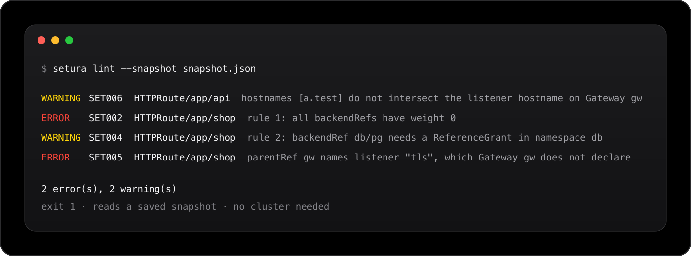

Zyvor Setura
A Gateway API gateway built into one static binary, and a verifier that checks what really answers. No Envoy required.
$ setura explain https://orders.test --backend orders-v1 dns ok addresses=['127.0.0.1'] tcp ok peer=127.0.0.1 tls ok version=TLSv1.3 http ok status=200 expected=200 backend ok identity=orders-v1 assert unused
Built in
Setura serves Gateway API routes straight from the binary: listeners, weighted routing, filters, TLS and hot reload. Point it at a config, or run it in your cluster.
The gateway reads the same snapshot format as lint and map. A config with lint errors is refused and the old one keeps serving, so a bad edit never takes traffic down. Already on Envoy Gateway? Setura verifies that too.
$ setura gateway up examples/builtin-demo.json demo backend orders-v1 http://127.0.0.1:19101 demo backend orders-v2 http://127.0.0.1:19102 serving setura-demo/dev/web :8080 admin http://127.0.0.1:19000 $ setura bench http://orders.mactra.test:8080/checkout \ --address 127.0.0.1 --requests 400
How it works
A route can be Accepted, Programmed and still serve the wrong application. Setura sends a real request down the client path and tells you which stage broke.
Resolve the name, or pin a numeric address without losing the Host header.
Connect to the published listener and record the peer you actually reached.
Check trust and hostname on the same socket the request uses.
Assert the status, response headers, body text and a latency budget.
Confirm which release really answered, from its identity header.
Features
explain, check and compare send real requests and report DNS, TCP, TLS, HTTP and backend identity. Exit codes and JUnit XML drop straight into CI.
gate demands current parent status and a streak of passing probes, and resets the streak if the route changes mid-check.
lint reads a saved snapshot offline and flags dropped traffic, missing listeners, shadowed routes and absent ReferenceGrants, with stable rule IDs.
publish finds the Envoy Service for a listener and forwards it to loopback on your Mac or Linux box. Preview with --dry-run.
map renders an interactive route graph. impact lists every route that depends on a Service, ignoring zero-weight paths.
ai turns saved evidence into cited findings and can ask a local model. Redact hostnames and IPs first, and suggestions pass a read-only allowlist.
inspect, listeners and doctor show per-parent conditions with observed generation, endpoint readiness and the RBAC you are missing.
snapshot and diff capture Gateway and HTTPRoute specs and exit 1 when they differ.
watch re-probes on an interval and prints only state changes. Serve Prometheus /metrics and keep a JSON-lines history.
Probe with client certificates, see cipher suite and expiry in the TLS stage, and run certs to verify a chain. No skip-verify flag, on purpose.
--http2, grpc-health and bench with p50, p90 and p99 and budgets that fail the run.
why walks every listener, route and rule with the gateway's own matching code and names the precedence rule that decided it.
replay runs real access-log traffic through the old and new config and reports every request that would change route, backend or outcome.
gateway rollout lints, swaps the config atomically, probes, and restores the previous config on a failed check, a rejected reload or Ctrl-C.
Send a slice of traffic to the new backend and diff status, headers, body and latency, without the client ever seeing the copy.
migrate check compares Ingress rules with their converted routes, flags nginx annotations with no equivalent, and names the missing ReferenceGrant.
setura ui shows the route map, traffic split and findings with fixes. Read-only, loopback by default, one embedded page.
Written in Go with no runtime dependencies. macOS and Linux, arm64 and amd64, a checksum-verified installer, a Homebrew formula and a distroless container image.
Lint
Fourteen rules, each with a stable ID you can reference from CI, across HTTPRoute, GRPCRoute, TLSRoute and ReferenceGrant. Lint reads declared specs only, so it works on a laptop with no cluster.
setura lint exits 1 on errors, or on warnings too with --strict. Output is calm text for people, JSON for pipelines, and SARIF for GitHub code scanning. Adopt it on a messy cluster with a baseline and only new findings fail.

Route map
This is the real output of setura map, running live below. It is one self-contained HTML file.
Sample topology: an orders route sending 90% of traffic to one Service and 10% to a canary.
In your pipeline
Require headers, body text and a latency budget in a plain JSON file, then run it from anywhere.
[{
"url": "https://orders.mactra.test/checkout",
"address": "127.0.0.1",
"backend": "orders-v1",
"headers": { "X-Env": "staging" },
"body_contains": "ready",
"max_ms": 250
}]setura check checks.json --junit report.xml exits 0 when everything passes and 1 on any observed failure. Exit 2 means a setup error, so a typo never looks like an outage.
Pricing
Source-available under the Zyvor Production Licence v2.0. A 30-day trial is available on request from sales@zyvor.dev (a paid evaluation Order at no charge); production and any other use needs a paid Order, licensed by the cluster.
For trying it out.
Evaluation Order at no charge
For each cluster you gate, probe and lint in production.
INR 9,999 incl. 18% GST in India
For platform teams running several clusters.
Up to 10 clusters · INR 49,999 incl. 18% GST in India
US dollar prices are for customers outside India and exclude tax. Indian rupee prices include 18% GST. Need more than 10 clusters, supported releases, an SLA or a named contact? That is Zyvor Enterprise: write to sales@zyvor.dev.
Questions
The full source is public, under the Zyvor Production Licence v2.0. That is source-available rather than OSI open source: a 30-day trial is available on request from sales@zyvor.dev (a paid evaluation Order at no charge), and production and any other use needs a paid Order.
Using Setura to support live business operations, customers or revenue-generating services. The licence text is the authority; ask sales@zyvor.dev if you are unsure.
No. setura gateway is a Gateway API data plane built into the binary. It does not yet cover everything Envoy does (no GRPCRoute, retries or rate limiting), so if you need those today, run Envoy Gateway and let Setura verify it.
Not unless you ask. Every command reads through your existing kubectl credentials. publish runs a foreground kubectl port-forward and stops when you press Ctrl-C.
Those tools inspect and translate cluster resources. Setura is complementary: it sends a real request through the listener and checks what answered, then lints the specs offline. Use them together.
Only against a local Ollama model on 127.0.0.1, and only if you pass --model. Without it, Setura just summarizes the evidence.